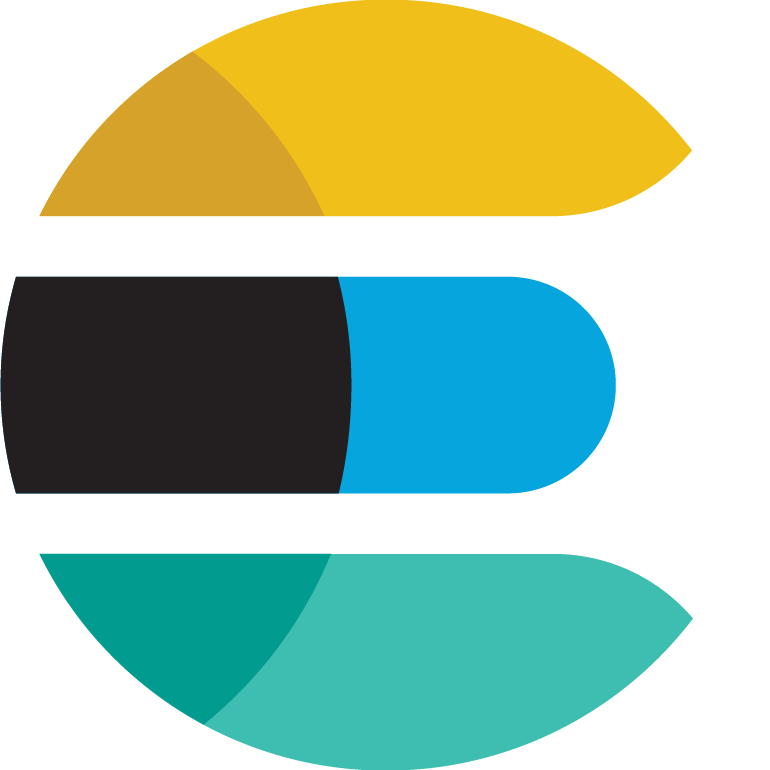

1

Le stockage est une problèmatique au coeur des services du Cloud. Les données d'un système distribué doivent rester accéssibles et cohérentes. Elasticsearch est le serveur de recherche le plus populaire chez les professionnels. Il utilise la bibliothèque java Lucene pour indexer et rechercher du texte. Il fournit un moteur de recherche distribué et multi-entité à travers une interface REST. Il est donc possible de s'y interfacer dans une multitude de langages. Il est souvent associé à deux autres produits : Kibana et Logstash. Nous avons eu l'occasion de tester le premier.